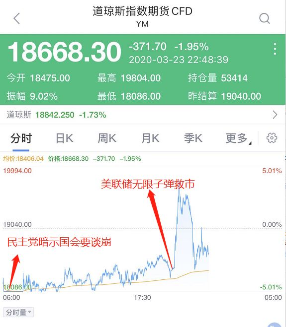
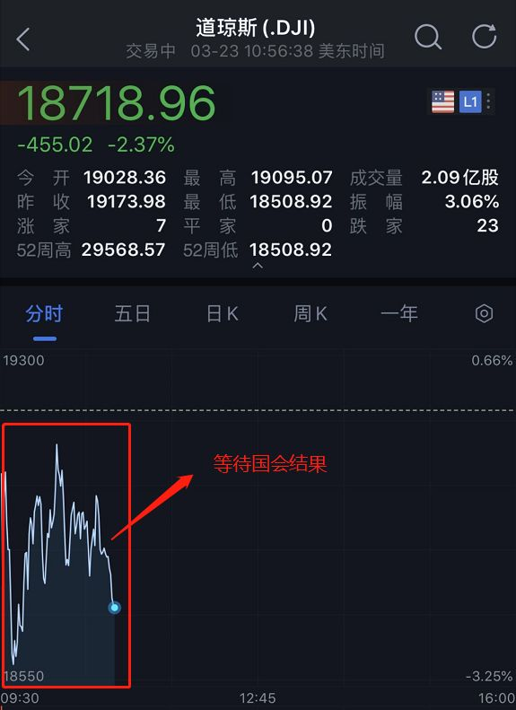
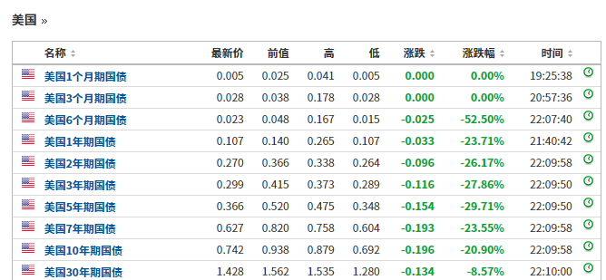
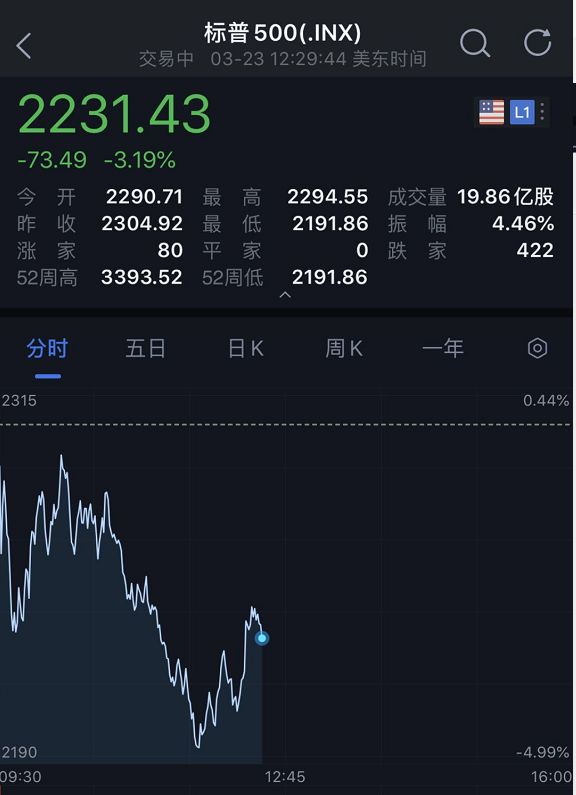

直接“撒钱”！特朗普猛药自救，急推万亿美元刺激，美股暴涨千点！杜兰特确诊，美国50州全“沦陷”！
原文链接 备份链接 又是惊心动魄一夜！ 在疯狂降息和超级量化宽松政策失效后，美联储再度祭出救市“大杀器”，美国政府也在积极酝酿万亿刺激计划，启动“直升机撒钱”时代。 消息传出后，昨日晚间跌破20000点的道指盘中开始暴力拉升，纳斯达克指 …

北京时间周一一大早，美股三大股指期货熔断跌停，原因是周日的时候，美国国会众议院议长佩洛西（民主党人）为了搞垮特朗普，不同意参议院提出的两万亿美元的经济刺激计划，于是熔断。
紧接着到了晚上，美联储超预期宣布开启无限量、无底线QE，美股瞬间从ICU出院，直接进了KTV，三大股指期货从跌3%直线飙涨到涨3%。这时候投资者都预期美股开盘一定跟着逆转大涨。

结果开盘，再一次逆转了大家想的逆转，美股开盘一度暴跌了500点，道琼斯指数跌破了19000点，走势极为混乱，震荡不前，原因是国会两党还没有投票通过经济刺激和救援计划，本来美国时间周一上午九点半开始投票，后面推迟到中午。


债市狂欢
美股一度暴跌900点
美联储放了大招，对债市是超大的利好。美债迎来暴涨，各期限国债收益率大跌。

但美股因为在焦灼等待国会谈判结果，反而对利好视而不见，道琼斯指数一度暴跌900点。跌幅达到5%。随后过了12点之后，据美国媒体报道，参议院少数党领袖查克·舒默称“我们非常接近达成协议。很接近。我们的目标是今天达成协议。我们充满希望，甚至充满信心，我们将实现这一目标。”

消息出来之后，美股就发生了逆转，直线拉升！



美联储引爆“核炸弹”：压上全部赌注、开启无限量化宽松！
迄今为止最积极的市场干预
当地时间3月23日早上，美联储宣布，因为新冠病毒大流行对社会各界造成“巨大困难”，美联储宣布广泛新措施（extensive new meaures)来支持经济，包括了开放式的资产购买，扩大货币市场流动性便利规模。

美联储称，本周每天都将购买750亿美元国债和500亿美元机构住房抵押贷款支持证券，每日和定期回购利率报价利率将重设为0%。为确保市场运行和货币政策传导，将不限量按需买入美债和MBS。
与此同时，美联储将开始为家庭、小企业和主要雇主提供前所未有的信贷支持。美联储在声明中表示，采取这些措施是因为“我们的经济将面临严重的混乱，这一点已经变得很明显”。
美联储表示，在这个充满挑战的时期，他们将致力于使用各种工具来支持美国工人、企业和美国经济。“新冠病毒大流行正对美国和世界各国造成巨大的困难。我们国家的首要任务是照顾那些受感染的人，并限制病毒的进一步传播。尽管存在巨大的不确定性，但我们的经济显然将面临严重的混乱。我们必须在公共和私营部门采取积极措施，将损失限制在就业和收入方面，并在短暂的中断后促进经济迅速复苏。”
周一的声明是美联储迄今为止最激进的市场干预行动。此前，美联储曾宣布将购买价值5,000亿美元的美国国债和2,000亿美元的MBS。这一新举措代表着对量化宽松政策的无限制承诺。
Bleakley咨询集团首席投资官Peter Boockvar在一份报告中称，”我们现在再次处于无限宽松的状态。”
MUFG Union Bank首席金融经济学家Chris Rupkey表示，“美联储的政策正转向更高的档位，试图帮助支撑目前看似处于自由落体状态的经济。”“央行正在转变角色，不再是最后的贷款人，而是最后的买家。不要问他们会买多少，这是真正的无限量化宽松。”

声明全文如下
美联储致力于在这一充满挑战的时期内使用其全套工具来支持家庭，企业和美国整体经济。冠状病毒大流行在美国和世界各地造成了巨大的困难。我们国家的首要任务是照顾受难者并限制病毒的进一步传播。尽管仍然存在很大的不确定性，但很明显，我们的经济将面临严重的破坏。必须在公共和私营部门采取积极的努力，以限制工作和收入的损失，并在干扰消除后促进迅速的恢复。
美联储的职责以国会授权的任务为指导，以促进最大的就业和稳定的价格，以及其职责是促进金融体系的稳定。为了支持这些目标，美联储正在利用其全部权限来为向美国家庭和企业的信贷流动提供有力的支持。这些动作包括：
支持关键市场功能。联邦公开市场委员会（FOMC）将购买必要数量的国债和机构抵押支持证券，以支持平稳的市场运作以及将货币政策有效地传递给更广泛的金融环境和经济。联邦公开市场委员会此前曾宣布将购买至少5000亿美元的美国国债和至少2000亿美元的抵押支持证券。此外，联邦公开市场委员会将在其机构抵押支持证券购买中包括对机构商业抵押支持证券的购买。
通过建立新的计划来支持信贷流向雇主，消费者和企业，这些计划加在一起将提供高达3000亿美元的新融资。财政部将使用外汇稳定基金（ESF）向这些设施提供300亿美元的股本。
建立两种支持向大型雇主提供信贷的设施–用于发行新债券和贷款的一级市场公司信贷融资（PMCCF）和用于为未偿还公司债券提供流动性的二级市场公司信贷融资（SMCCF）。
建立第三个设施，即定期资产支持证券贷款设施（TALF），以支持信贷流向消费者和企业。TALF将允许发行由学生贷款，汽车贷款，信用卡贷款，小企业管理局（SBA）担保的贷款支持的资产支持证券（ABS），以及某些其他资产。
通过扩展货币市场共同基金流动性融资（MMLF），以包括市场上可变利率的需求票据（VRDN）和银行存款证明，包括证券在内的各种证券，促进信贷向市政当局的流动。
通过扩展商业票据融资工具（CPFF），将高质量，免税的商业票据作为合格证券包括在内，促进信贷向市政当局的流动。此外，该设施的价格已降低。
除上述步骤外，美联储预计将宣布建立“大街商业贷款计划”，以支持对符合条件的中小型企业的贷款，以补充SBA的努力。
PMCCF将允许公司获得信贷，以便他们能够在与大流行相关的错位期间更好地维持业务运营和能力。该设施向投资级公司开放，并将提供四年过渡性融资。借款人可以选择在贷款的前六个月内延期支付利息和本金，这可以由美联储决定延长，以便手头有更多的现金可以用来支付雇员和供应商。美联储将为特殊目的工具（SPV）提供资金，以从PMCCF向公司贷款。财政部将使用ESF对SPV进行股权投资。
SMCCF将在二级市场上购买由投资级美国公司和在美国上市的交易所买卖基金发行的公司债券，这些公司的投资目标是为美国投资级公司债券提供广泛的市场敞口。财政部将使用ESF对美联储为此设施建立的SPV进行股权投资。
根据TALF，美联储将无条件向某些AAA评级的ABS持有人提供贷款，这些资产由新近发行的消费和小企业贷款支持。美联储将放贷等于ABS市值减去扣减额的金额，并将始终由ABS担保。财政部还将利用ESF对美联储为此建立的SPV进行股权投资。TALF，PMCCF和SMCCF由美联储根据《美联储法案》第13（3）条授权，并由财政部长批准设立。
这些行动增强了美联储过去一周采取的措施，以支持向家庭和企业的信贷流动。这些包括：
建立CPFF，MMLF和主要交易商信贷机制；
扩大中央银行流动性掉期线；
在折扣窗口中增加借贷的可用性并简化条款的步骤；
取消准备金要求；
指导意见，鼓励银行在遇到与冠状病毒有关的财务挑战时灵活应对客户，并利用其流动性和资本缓冲来做到这一点；
声明鼓励在美联储使用白天信用。
这些行动加在一起将为广泛的市场和机构提供支持，从而支持经济中的信贷流动。
美联储将继续使用其全部工具来支持信贷向家庭和企业的流动，从而促进其最大就业和价格稳定目标。
如何解读美联储的动作？
先来个段子，2008年的美联储 vs 2020年的美联储，美联储水娃变海王！

交银国际董事总经理洪灝3月23日晚间表示，开放式购买国债、MBS、债券ETF；为ABS，学生贷款，信用卡和小企业贷款建立了TALF；还准备小企业贷款。今晚，美联储压上了全部赌注，全球市场一片欢腾。这是一个历史性时刻。

什么是无限量QE？将对市场造成何种影响？中信证券明明观点如下：
拜时差所赐，国内研究员每晚8点档成为了新的工作时间。今晚我们又学会了一个词叫，unlimited QE。当然这个词目前的信号意义大于实践意义，美联储目前推出这个政策毫无疑问是为了提振市场的信心，考虑到海外疫情的发展，这个政策显然是有必要的。
但是从更长的历史视角，我们似乎进入了一个魔幻的阶段，无限量QE到底意味着什么？
首先，从今天FOMC的新闻稿里，有一个很重要的话叫“support the flow of credit to households and businesses”，翻译过来就是说无限量QE的主要目的是支持居民和企业信用。
第二，最重要的一点，货币和信用是一个东西吗？显然不是的，货币是一种支付凭证，信用是一种借贷关系，所以无限量QE的就是极致的货币信用化。
第三，欧美央行之所以频频使用QE，就是因为银行体系信用扩张的失效，这和过低的利率、严格的监管要求都有关系。但最重要的还是，全球经济框架的脆弱所导致的增长缺失。08年后的十年，全球靠着天量的货币终于获得了2%左右的增速，2020年因为疫情的影响，全球大概率又见大规模的负增长。这个时候，银行肯定是不愿意信用扩张的，因为不仅没有收益，而且会有大量的信用风险。所以只有依靠央行进行信用扩张。
第四，市场如何反应？美元先跌为敬，黄金上涨，但似乎目前看美元似乎有些纠结，说明了市场对于美元紧张的担忧仍然没有完全解除。对于美股的表现，我们拭目以待，同时欧美国家的大规模财政刺激也在讨论中，货币财政化终将落地，到底是利多落地，还是利多出尽的利空，似乎很快就会有答案了。但是，我想至少有一点，就是世界很难回到过去的样子了，基于历史经验的均值回归也没太大参考意义，上蹿下跳的猴市对于投资非常不利，还是我之前的观点，讨论底部之前需要先看到汇率市场稳定下来，目前还需多看看。
复旦大学经济学院院长张军在解析美联储操作时表示，这是因为恐慌，因为整个股票市场，美国的三大股指3月9日以后一直出现比较大的震荡，市场恐慌的情绪一直没有摆脱。“美联储这些政策无非是给大家吃定心丸，开放式的债权购买就不封顶了。”张军分析道。
他认为，疫情最后经济要停摆一阵子，所以向市场注入流动性的这样的一些政策并不能真正解决疫情对美国经济冲击的问题，它只不过是先稳住金融、稳住资本市场。现在很多大的投行都预测，美国经济二季度会比较糟糕。而这反过来还会对金融市场造成冲击。“我感觉美联储的政策已经有点歇斯底里了，政策已经透支了。”
平安证券首席经济学家张明：无限制QE损害美联储货币政策的独立性
1、天日昭昭。如果辞世不久的沃尔克知道鲍威尔的所作所为，不知作何感想。从美联储货币政策独立性来看，真是一蟹不如一蟹；
2、美国政府不在当前加大力度抗疫，却开足马力放水。美国政府的初心如何，不言自明；
3、无限制QE对抑制疫情有效吗？无效；对提振经济有效吗？存在不确定性；对防范垃圾债与可投资级别企业债违约有效吗？存在不确定性；对稳定股市有效吗？或许可以。
4、不排除美联储下一步宣布直接购买股市ETF、大型蓝筹股或可投资级别债券的可能性；
5、鲍威尔这届美联储的作为，在很大程度上损害了美联储由沃尔克在1980年代梳理起来的货币政策独立性。从长远来看将会损害美元的国际地位。从短期来看，一旦市场情绪恢复平稳，美元指数将会步入新一轮熊市；
6、在美国政府丧失政策定力的时刻，中国货币政策更应该具备定力。货币政策操作应该从国内经济发展需要出发，而不应跟着美联储亦步亦趋。在一个普遍负利率的全球环境下，能够维持正利率的中国经济与中国市场将会具备更大的吸引力。从2020年第二季度起，中国经济将会触底反弹，美国经济与全球经济将会掉头向下。上一次中国经济的强势崛起发生在2008年次贷危机之后。而在2020年，无论中国经济占全球经济的比重，还是中国经济增长对全球经济的贡献，都有望上一个新台阶。
李迅雷：黄金应该大涨，美元贬值
美联储提供无限流动性，究竟什么品种更有反弹力度呢？经济学家李迅雷表示：之前黄金大跌，是因为流动不行了，持有现金才是最安全的。如今美联储承诺流动性没有问题了，那么黄金应该大涨，美元贬值。李迅雷认为，当流动性短缺的时候，避险资产不能避险了，超发的货币居然成为安全资产。当美联储承诺无限量放水的时候，安全资产瞬间“贬值”，避险资产大涨。08年的黄金也是这样的回落暴涨走势，历史总有惊人的相似。


美国巨额刺激计划未获通过
两党将继续谈判
美国共和党和民主党就应对疫情的新一轮财政刺激政策谈判失败，接下来24小时将继续进行谈判。有报道称，谈判破裂后，民主党人阻止了共和党人控制的参议院的财政计划。据估计，该计划将向经济注入1.6万亿美元。谈判失败后，美国股指期货一度遭遇熔断。最新消息显示，参议院将于今日再次就刺激法案进行投票。
不过美国总统特朗普随后讲话表示，他将与众议院民主党议长南希-佩洛西合作，使经济刺激方案获得通过。特朗普还表示，世界最大的经济体可能需要再次注资，虽然他希望不会需要。众议院议长佩洛西称，众议院现在将推进自己的法案，该法案将检验总统承诺跨党派合作的有效性。
佩洛西在周日表示，“我们将推出自己的方案，希望能够具备兼容性”，预计众议院拨款委员会最早将于周一起草立法文本。然而，局势的变动和对妥协的预期使预测该计划在已经不确定的环境中成功通过特别困难。
参议院最初的计划是，包括向每个符合条件的美国人发放1200美元的支票，并将报税时间从4月15日推迟至7月15日，帮助陷入困境的企业提供总价值数十亿美元的紧急救援资金，此外还将向陷入困境、面临破产的航空公司提供约580亿美元的贷款和贷款担保。
美财长姆努钦称正在与美联储合作
希望向市场提供4万亿美元流动性
美国财政部长姆努钦周一表示，他正在与美联储合作，希望向市场提供4万亿美元流动性。
姆努钦表示：“希望小型企业能保留住员工，接受政府的贷款。刺激计划将帮助美国工人。正在使用我们拥有的一切工具，需要尽快增加工具。刺激法案获得两党大规模支持。”
姆努钦称：“刺激计划中未提及紧急救助内容。若这场卫生危机持续，政府将向议会提出更多立法请求。G7和G20领导人正在与IMF和世界银行紧密合作，这是团队努力的结果。”
他表示：“新法案将为美国应对新冠病毒危机提供10-12周的时间，特朗普总统尚未作出全面停止经济活动的决定。这项立法不是大规模的基金，而是大型流动性项目。确保所有小型企业得到必要流动性。”
关于救助航空业，姆努钦表示，他希望航空公司能继续运营国内航线，“将根据市场条款为航空企业提供援助，我们有能力买入公司股份。美国将发行大量30年期债券。但技术问题阻止美国发行50年期或100年期债券。”
美国确诊新冠肺炎病例超4万例
据约翰斯·霍普金斯大学疫情实时监测系统统计，截至美东时间23日下午6点16分，美国已至少有新冠肺炎确诊病例43214例，包括死亡病例533例。
23日，美国各州共报告超过100例新增死亡病例，这是疫情暴发以来美国单日死亡病例数首次升至三位数。死亡病例已至少遍及美国34个州、华盛顿哥伦比亚特区和波多黎各。
美国总统特朗普23日签署了一份行政令，禁止囤积应对疫情所需的医疗物品，例如洗手液、口罩、个人防护物品等。
美国公共卫生局局长杰罗姆·亚当斯23日警告称，美国年轻人感染新冠病毒的比例较高，这与其他国家的情况不一致。他警告称，本周美国的情况会更糟糕，而全美民众对这一威胁的重视程度不够，加州的海滩、华盛顿特区仍然游人如织。
当天，密歇根州、印第安纳州、西弗吉尼亚州和俄勒冈州都颁布了“居家令”，加上此前已颁布“居家令”的地方州，已至少有近三分之一的美国人被要求待在家中。此外，马里兰州和马萨诸塞州州长下令关闭非必要的企业。弗吉尼亚州州长也宣布，该州所有公立和私立学校将在本学年剩下的时间里继续关闭。
来源：中国基金报 泰勒、人民日报


推荐阅读

点击大图 |特朗普连任危矣？

点击大图 |这次美国股灾堪比1929年还是2008年？

原文链接 备份链接 又是惊心动魄一夜！ 在疯狂降息和超级量化宽松政策失效后，美联储再度祭出救市“大杀器”，美国政府也在积极酝酿万亿刺激计划，启动“直升机撒钱”时代。 消息传出后，昨日晚间跌破20000点的道指盘中开始暴力拉升，纳斯达克指 …
原文链接 备份链接 美联储的敌人不仅是跌跌不休的股市，还有加速传播的新冠病毒，以及因经济停摆引发的一系列社会民生和美国式两党政治等问题 图/ 法新 文 |《财经》特派记者 金焱 发自华盛顿 编辑 | 苏琦 在疫情夹带下，资本市场继续承 …
原文链接 备份链接 3月22日早六点，国际市场开盘即现“暴动”。美股指期货跌超5%，触及下跌熔断限制，道指期货低开近千点。短期恐慌情绪与结构性失衡相叠加，没有人知道美股何时企稳，以及这会否是全球大萧条的第一声警哨 封面设计/黎立 文 |《 …
原文链接 备份链接 疫情持续在中国境外蔓延会恶化市场情绪，美欧股市最近两天持续下跌与此有关。展望未来，资本市场持续上行的希望在于：中国疫情防控企稳，世界其他地区迅速协调行动 文 |《财经》特派华盛顿记者 金焱 《财经》 …
原文链接 备份链接 **文 |《巴伦周刊》中文版撰稿人 吴海珊 ** 编辑 | 康娟 上周(3月16日至3月22日）美股遭遇了金融危机以来最糟糕的一周，道琼斯指数、标普500指数和纳斯达克指数分别下跌了17.3%、15%和12.6%，为 …